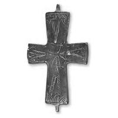
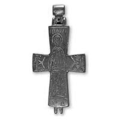

Catalog › CE-0428 · SYR2012-5
Encolpion bivalv de aliaj de cupru, cat. 5, NMIU Kiev
sec. XI (1001–1100) · loc necunoscut · Muzeul Național de Istorie a Ucrainei (НМИУ), Kiev; colecția „siriană” B. I. și V. N. Hanenko, inv. valva anterioară: в 4626/289 (4102); valva posterioară: в 4626/303 (4765)
double-sided reliquary cross (enkolpion), altul; c. XI (1001–1100); find spot unknown; kept at Muzeul Național de Istorie a Ucrainei (НМИУ), Kiev; colecția „siriană” B. I. și V. N. Hanenko.




Identificare
- Categorie
- Encolpion bivalv (relicvar)
- Material
- Altul
- Tehnică
- Gravare (incizie)
- Dimensiuni
- Î 66 × L 44 × Gr 9 mm
Iconografie
- Avers
- Ornament geometric
- Descriere avers
- Cruce egală cu brațe puternic evazate, încheiate în „lacrimi”; două brațe hașurate; marginile valvei conturate printr-o linie adâncită, colțurile subliniate prin hașuri arcuite; pe capete, triunghiuri alungite care formează o a doua cruce (contururile triunghiurilor, cu excepția celui de sus, subliniate prin hașuri). Execuție neglijentă, incizii de adâncime neuniformă.
- Revers
- Sf. Ioan
- Descriere revers
- Sfântul Ioan frontal, în picioare, cu nimb simplu deschis, în veșmânt bogat ornamentat cu benzi verticale hașurate și triunghiuri cu hașuri în direcții diferite; capul, disproporționat de mic, cu trăsături abia schițate și o mică barbă în pană; poziția mâinilor neclară; brâu lat; picioarele îndreptate într-o parte. Pe brațele laterale, compoziție ornamentală. Inscripție deasupra capului.
- Inscripții
- IOANI[C]
- Limba
- Greacă
Datare și atribuire
- Datare
- sec. XI (1001–1100)
- Tipologie
- serie cu cruce (sau compoziție în cruce) pe valva anterioară și sfânt în picioare pe cea posterioară (Pitarakis 2006)
Descoperire
- Context
- Colecție (fără context)
- Coordonate
- 50.4536° N, 30.5164° E
- Precizia locului
- Loc de păstrare (loc de descoperire incert)
Păstrare și referințe
- Colecție
- Muzeul Național de Istorie a Ucrainei (НМИУ), Kiev; colecția „siriană” B. I. și V. N. Hanenko
- Nr. inventar
- valva anterioară: в 4626/289 (4102); valva posterioară: в 4626/303 (4765)
- Bibliografie
- A. A. Пескова, Л. В. Строкова, Христианские древности Византии в «Сирийской коллекции» Б. И. и В. Н. Ханенко, Sankt-Petersburg–Kiev, 2012, 225 p. [Peskova, Strokova 2012], p. 69, cat. nr. 5, ilustrația (fotografie și desen) de la p. 69.
- Figura
- ilustrația la cat. nr. 5
- Planșe
- Peskova, Strokova 2012, p. 69
- Observații
- Cruce-relicvar cu brațe drepte ușor evazate, cu oglavie cilindrică turnată într-un singur corp; lungime cu oglavie 9,0 cm. Rebordurile valvelor au pierderi de metal; urechea de sus a valvei anterioare deteriorată. Valva anterioară are interiorul neregulat, cu adâncituri. Dimensiuni în sursă (în paranteză, înălțimea cu urechile): 6,6 (7,7)×4,4 cm; 6,7×4,4 cm; lungime cu oglavie 9,0 cm; grosime 0,8–0,9 cm. Vechiul număr de inventar al Muzeului de Artă Hanenko (1925) este cel din paranteză. Album Hanenko, vol. III (needitat): valva anterioară tabla XLIII, nr. 443; valva posterioară tabla XLIV, nr. 456. Atribuirea autoarelor: Bizanț, sec. XI. Locul descoperirii nu este dat în sursă. Material în sursă: aliaj de cupru. Locul descoperirii nu e cunoscut cu precizie; punctul de pe hartă marchează locul de păstrare (Muzeul Național de Istorie a Ucrainei), nu locul descoperirii. Coordonate: nu sunt date în sursă.
Citare: Corpus Encolpiorum, CE-0428, Encolpion bivalv de aliaj de cupru, cat. 5, NMIU Kiev, --root/piese/SYR2012-5/ (accesat 2026-10-17).